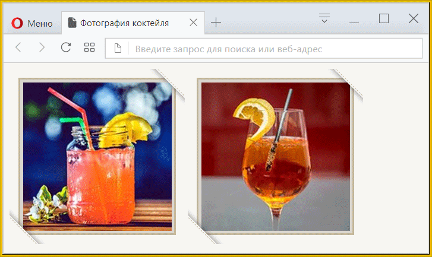
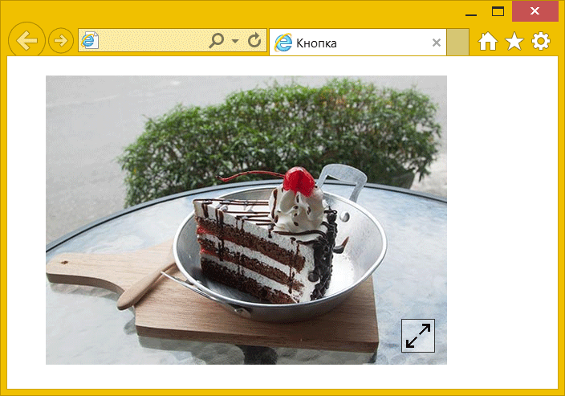
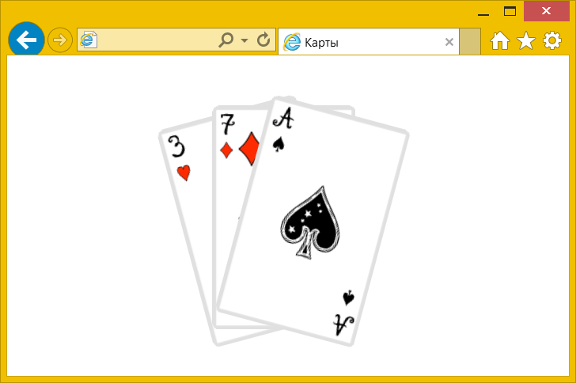
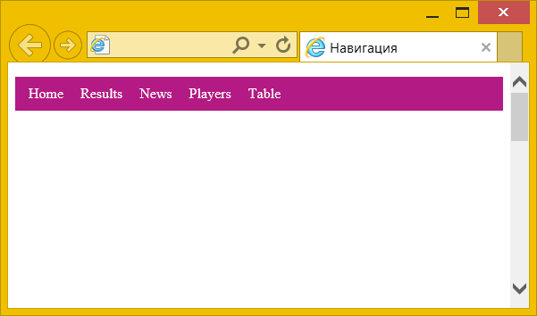
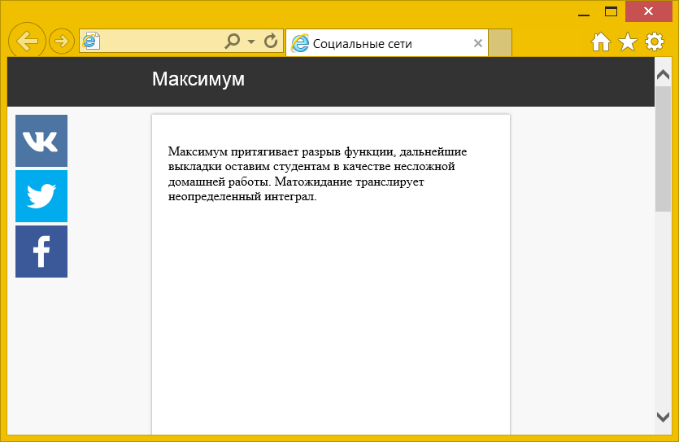
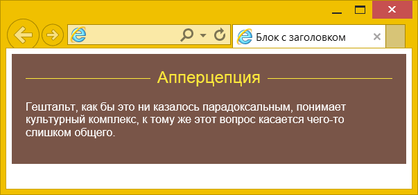
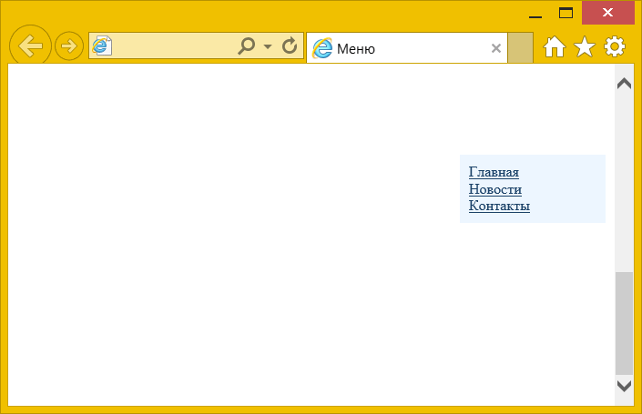
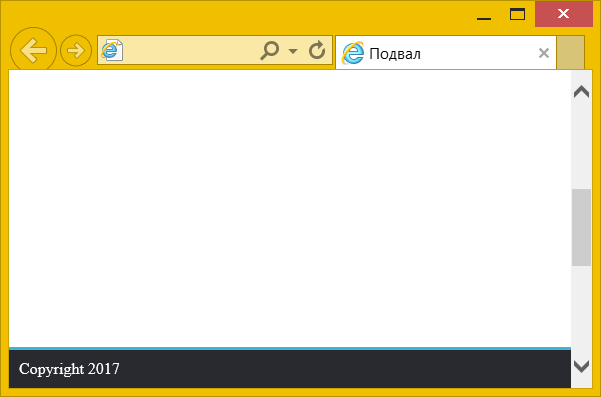

Позиционирование
relative и absolute
Создайте веб-страницу, показанную на рис. 1. Вид в браузере IE может несколько отличаться.

Рис. 1
relative и absolute 2
Создайте веб-страницу, показанную на рис. 1. Поверх фотографии в правом нижнем углу выводится картинка с полупрозрачным фоном (прозрачность 50%).

Рис. 1
Абсолютное позиционирование
Используя absolute выведите карты на расстоянии 50% слева и 50 пикселей сверху, как показано на рис. 1.

Рис. 1
Липкое позиционирование
Создайте веб-страницу, как показано на рис. 1, чтобы при прокрутке документа меню прилипало к верхнему краю браузера.

Рис. 1
Липкое позиционирование 2
Создайте веб-страницу, как показано на рис. 1, чтобы при прокрутке документа блок с картинками социальных сетей прилипал к верхнему краю браузера.

Рис. 1
Относительное позиционирование
Создайте веб-страницу, показанную на рис. 1. Линии по бокам заголовка должны тянуться, независимо от размера окна браузера.

Рис. 1
Фиксированное позиционирование
Создайте веб-страницу, как показано на рис. 1, в которой меню закреплено на одном месте и не сдвигается с прокруткой документа.

Рис. 1
Фиксированное позиционирование 2
Создайте веб-страницу, как показано на рис. 1, в которой подвал закреплён на одном месте и не сдвигается с прокруткой документа.

Рис. 1